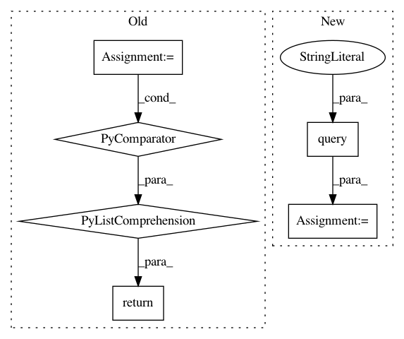

df1dd9b108f3cd7d5130e7f654ea099021c7a2b3,qanta/guesser/experimental/elasticsearch_instance_of.py,ElasticSearchIndex,search,#ElasticSearchIndex#Any#Any#Any#Any#,82
Before Change
apply_filter = False
if apply_filter:
s = Search(index=INDEX_NAME)\
.filter("term", instance_of=predicted_instance_of)\
.query(
"multi_match",
query=text,
fields=["wiki_content", "qb_content"]
)
else:
s = Search(index=INDEX_NAME) \
.query(
"multi_match",
query=text,
fields=["wiki_content", "qb_content"]
)
results = s.execute()
return [(r.page, r.meta.score) for r in results]
es_index = ElasticSearchIndex()
After Change
class_to_i = {label: i for i, label in enumerate(classes, 1)}
i_to_class = {i: label for label, i in class_to_i.items()}
for q, p in zip(questions, pages):
for sent in q:
x_data.append(sent)
if p in instance_of_map:
y_data.append(class_to_i[instance_of_map[p]])
else:
y_data.append(class_to_i[NO_MATCH])
In pattern: SUPERPATTERN
Frequency: 3
Non-data size: 6
Instances
Project Name: Pinafore/qb
Commit Name: df1dd9b108f3cd7d5130e7f654ea099021c7a2b3
Time: 2017-05-24
Author: ski.rodriguez@gmail.com
File Name: qanta/guesser/experimental/elasticsearch_instance_of.py
Class Name: ElasticSearchIndex
Method Name: search
Project Name: QUANTAXIS/QUANTAXIS
Commit Name: 4113a6a3be19167a8c551f8ae20e849ac851e52c
Time: 2019-03-25
Author: zhongjy1992@outlook.com
File Name: QUANTAXIS/QAFetch/QAQuery.py
Class Name:
Method Name: QA_fetch_index_day
Project Name: QUANTAXIS/QUANTAXIS
Commit Name: 5b4d04de17457286fe4e5f3e0e8295db42d0f064
Time: 2020-04-05
Author: 11652964@qq.com
File Name: QUANTAXIS/QAFetch/QAQuery.py
Class Name:
Method Name: QA_fetch_index_min